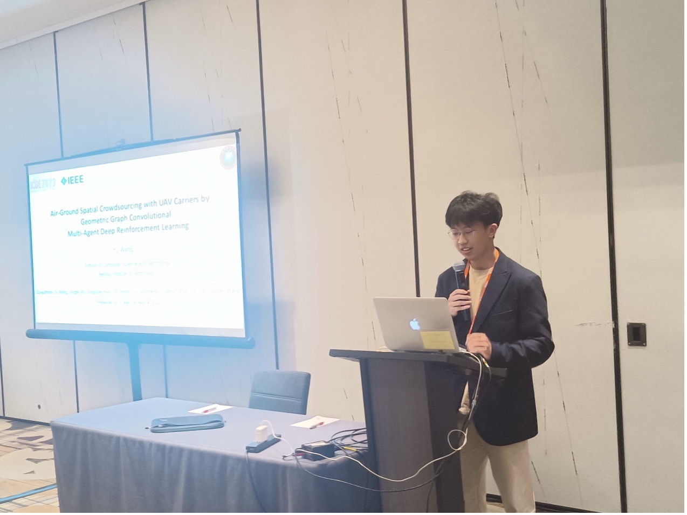

MSc Student advised by Chi Harold Liu
Beijing Institute of Technology (北京理工大学)
Contact:
WeChat & Phone: 18519112663
Hosted on GitHub Pages — Theme by orderedlist
Aside from work and studying, I‘m a sports lover. My interests includes ultimate frisbee and badminton. I am the fan of Stephen Curry and Golden State Warriors in NBA.
I played fingerstyle guitar for 8 years. Some of my guitar videos are in my Bilibili homepage .I attended the ICDE 2023 conference at Anaheim, California, USA, and presented two oral talk of our lab’s work.
I am honored to be interviewd by the we-media blogger 在下小苏, and shared my point of view towards AI. The video was watched by over 300,000 times. Link here